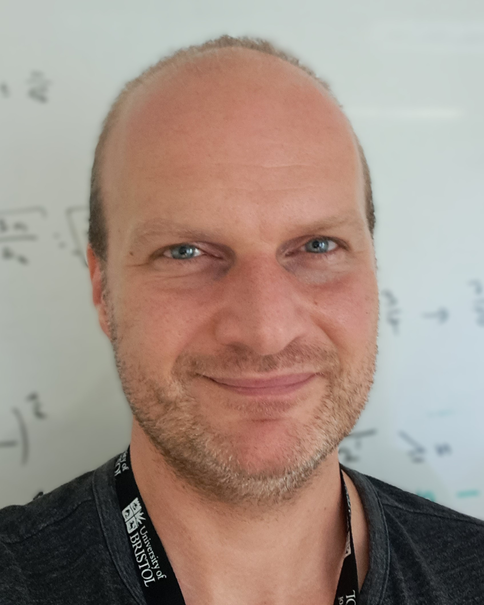
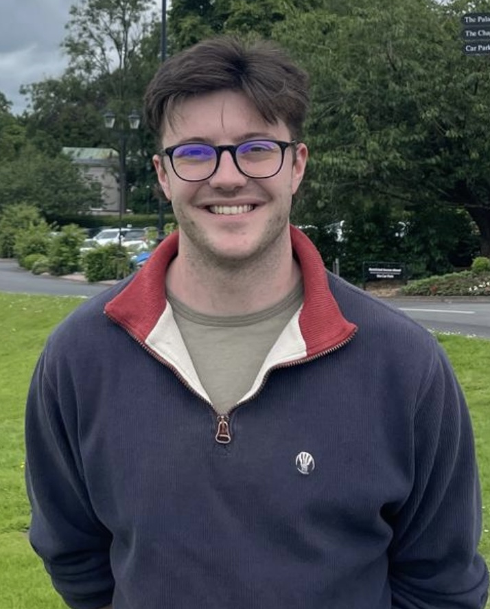

Raphaël Clifford
String algorithms
Research group · School of Computer Science
We are the Algorithms and Complexity research group in the School of Computer Science at the University of Bristol . Our research covers algorithms, computational complexity and related areas of theoretical computer science.
The group works on theoretical questions relating to the design, analysis and limitations of algorithms, including problems involving large data sets, graphs, strings and computational complexity.
Current group members
String algorithms

Head of Group · Streaming and distributed algorithms
Counting complexity and graph theory
Computational complexity

PhD student · Since 2024
PhD student · Since 2024
Since 2020
Publications involving members of the group, organised by year. Select any year to expand or collapse its list.
Algorithms and Complexity research group
School of Computer Science
University of Bristol
For questions about the group, research collaborations, student projects or PhD opportunities, contact: